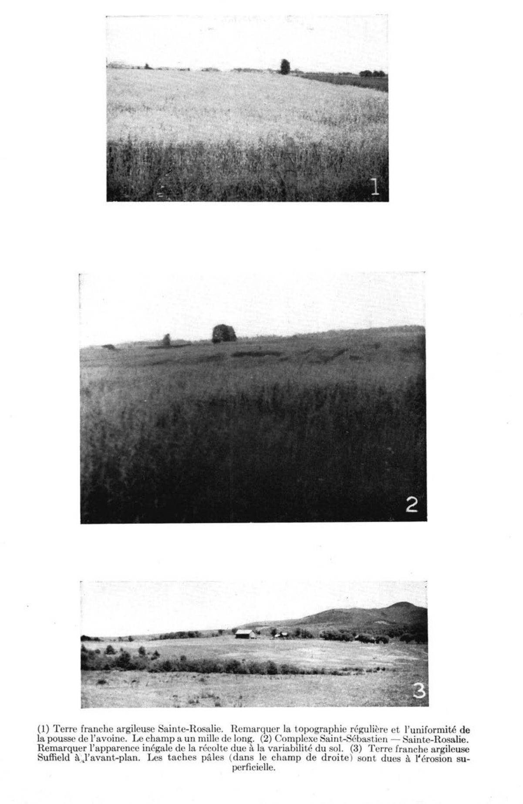

Identification & Caractéristiques Générales
La série Suffield s'est développée sur des dépôts meubles glacio-lacustres et fluvio-lacustres à texture fine, mis en place sous forme de terrasses ou de sédiments de bas de pente le long des vallées fluviales et en bordure des anciens bassins pro-glaciaires. Ces matériaux parentaux, caractérisés par une forte proportion de limons et d'argiles varvées, présentent une épaisseur variable pouvant atteindre plusieurs mètres en profondeur. La topographie associée à ces sols varie de plane à ondulée, épousant les contours des vallées et des secteurs de piémont, avec des pentes généralement orientées vers les axes hydrologiques.
Le profil morphologique se caractérise par une couche arable superficielle à texture de loam ou de loam limoneux, recouvrant un sous-sol s'alourdissant rapidement pour devenir un matériau argileux ou argilo-limoneux entre 20 et 50 cm de profondeur. L'horizon sous-jacent montre souvent une structure lourde, parfois massive, témoignant d'une faible perméabilité. Le drainage naturel varie d'imparfait à mauvais selon la position physiographique, ce qui confère à ces sols un régime hydrique marqué par une saturation temporaire en eau. La réaction chimique de la surface cultivée est fortement acide, la teneur en matière organique est élevée, et la surface est généralement exempte de pierrosité.
Sur le plan agronomique, les sols de la série Suffield affichent une bonne capacité de rétention en eau et une réserve intéressante en éléments nutritifs, notamment en potassium échangeable et en phosphore assimilable. Leurs principales limitations découlent de leur texture lourde, de leur faible perméabilité et de leur drainage restreint, nécessitant l'installation d'un réseau de drainage souterrain pour optimiser la mise en valeur. La régie culturale requiert également un chaulage régulier pour corriger l'acidité prononcée, ainsi que des apports organiques et un travail cultural adéquat afin d'améliorer la structure des horizons de surface et d'éviter les risques de compaction lors des interventions mécanisées.
Classification Taxonomique & Environnement Pédologique
| Ordre Pédologique | Brunisolique |
|---|---|
| Grand Groupe (SCSS) | Brunisol dystrique |
| Sous-Groupe Taxonomique | Brunisol dystrique gleyifié |
| Famille Pédologique | Argileuse-fine, mixte argileux, neutre |
| Mode de Dépôt Parental | Glacio-lacustre |
| Classe de Drainage Naturel | Imparfaitement drainé |
| Régime Thermique & Humidité | Frais / Perhumide |
Description Morphologique du Profil Type
Séquences génétiques des horizons pédologiques caractérisant le profil type représentatif de la série Suffield :
Profil naturel (vierge) — Comté de Shefford
✓ Source : Comté de Shefford — Page 59Couleur Munsell : Non précisée
Structure & Consistance : Granuleuse faible
Description morphologique : terre franche argileuse gris brunâtre; structure granuleuse faible, collante lorsqu'elle est humide; friable quand elle est sèche; pH 4.5
Couleur Munsell : Non précisée
Structure & Consistance : Faible
Description morphologique : terre franche argilo-limoneuse gris foncé; structure faible, friable en plaques; pH 4.9
Couleur Munsell : Non précisée
Structure & Consistance : Nuciforme faible
Description morphologique : terre franche limoneuse à argile gris brunâtre; structure nuciforme faible; légèrement marbrée; pH 5.9
Couleur Munsell : Non précisée
Structure & Consistance : Massive à faiblement nuciforme
Description morphologique : argile gris brunâtre, structure massive à faiblement nuciforme; plastique lorsqu'humide; friable lorsque sèche; pH 5.9
Profil représentatif — Comté de Drummond
✓ Source : Comté de Drummond — Page 132Couleur Munsell : 2.5Y 5/2, 2.5Y 3/2
Structure & Consistance : Fortement granulée
Description morphologique : Loam limoneux humifère, brun gris (2.5 Y 5/2) à l'état sec, brun gris très foncé (2.5 Y 3/2) à l'état humide; structure fortement granulée; friable. La réaction (pH 4.8) est très fortement acide.
Couleur Munsell : 5Y 8/3, 5Y 5/3
Structure & Consistance : Finement feuilletée
Description morphologique : Loam limoneux, jaune pâle (5 Y 8/3) à l'état sec, olive (5 Y 5/3) à l'état humide; structure finement feuilletée; friable; présence de quelques taches de gley. La réaction (pH 5.4) est fortement acide.
Couleur Munsell : 2.5Y 6/4, 2.5Y 4/4, 7.5YR 5/6
Structure & Consistance : Finement feuilletée
Description morphologique : Loam limoneux, brun jaune clair (2.5 Y 6/4) à l'état sec, olive (2.5 Y 4/4) à l'état humide; structure finement feuilletée; friable; présence de nombreuses taches de gley de couleur brun vif (7.5 YR 5/6). La réaction (pH 5.8) est moyenne-ment acide.
Couleur Munsell : 2.5Y 7/4, 2.5Y 5/4
Structure & Consistance : Grossièrement feuilletée
Description morphologique : Loam argilo-limoneux, jaune pâle (2.5 Y 7/4) à l'état sec, olive clair (2.5 Y 5/4) à l'état humide; structure grossièrement feuilletée; consistance parfois plastique. La réaction (pH 6.9) est très faiblement acide.
Profil forestier (sous boisé) — Comté de Frontenac
✓ Source : Comté de Frontenac — Page 139Couleur Munsell : 10YR 2/2, 10YR 4/1
Structure & Consistance : Polyédrique à granulaire
Description morphologique : Horizon organique brun très foncé (10 YR 2/2 h), gris foncé (10 YR 4/1 s); granulaire, moyenne, modérée; très friable; racines très abondantes, de toutes les grosseur, non orientées; limite abrupte, onduleuse; épaisseur de 10 à 15 cm; très fortement acide.
Couleur Munsell : 5Y 3/2
Structure & Consistance : Polyédrique à granulaire
Description morphologique : Argile brun gris très foncé (2,5 Y 3/2 h), gris à gris foncé (10 YR 4,5/1 s); polyédrique subangulaire, fine, faible à modérée; très friable; racines fréquentes, fines, très fines, micro-racines, verticales, obliques; limite nette, onduleuse; épaisseur de 8 à 15 cm; très fortement acide.
Couleur Munsell : 5Y 4/1, 5Y 5/1
Structure & Consistance : Polyédrique à granulaire
Description morphologique : Loam limono-argileux gris foncé (5 Y 4/1 h), gris (5 Y 5/1 s); massive, sans structure; ferme; racines peu abondantes, fines, très fines, micro-racines, verticales, obliques; limite abrupte, onduleuse; épaisseur de 10 à 32 cm; peu acide.
Couleur Munsell : 5Y 4/3, 5Y 5/1
Structure & Consistance : Polyédrique à granulaire
Description morphologique : Argile olive (5 Y 4/3 h), gris (5 Y 5/1 s); polyédrique subangulaire, fine, faible à modérée; ferme; racines peu abondantes, fines, très fines, micro-racines, verticales, obliques; limite nette onduleuse; épaisseur de 15 à 23 cm; neutre.
Couleur Munsell : 5Y 3/2 (matrice), 5Y 6/1 (marbrures)
Structure & Consistance : Polyédrique à granulaire
Description morphologique : Argile gris olive foncé (5 Y 3/2 h), gris à gris clair (5 Y 6/1 s); marbrures fréquentes, fines, faibles; massive, sans structure; très ferme; racines; peu abondantes, fines, très fines, verticales, obligues; neutre.
Profil cultivé (agricole) — Comté de Arthabaska
✓ Source : Comté de Arthabaska — Page 32Couleur Munsell : 10YR 3/1
Structure & Consistance : Polyédrique à granulaire
Description morphologique : Loam gris très foncé à brun-gris très foncé (10 YR 3/1,5 h), gris à gris clair (10 YR 6,5/1 s); quelques mouchetures, petites, faibles; massive; friable; racines très abondantes, moyennes, fines, très fines et microscopiques, non orientées, exo-agrégat; limite abrupte, ondulée; épaisseur de 16 à 27 cm; fortement acide.
Couleur Munsell : 10YR 4/2 (matrice), 10YR 6/3 (marbrures)
Structure & Consistance : Polyédrique à granulaire
Description morphologique : Argile brun-gris foncé à brun foncé (10 YR 4/2,5 h), brun pâle (10 YR 6/3 s); mouchetures nombreuses, petites, faibles, brun-jaune (10 YR 5/6 h); polyédrique subangulaire, moyenne, faible à modérée; friable; racines abondantes, fines très fines et microscopiques, verticales et obliques, exo-agrégat; pellicules argileuses, communes, épaisses, sur la face des agrégats, non spécifié, gris à brun-gris (10 YR 5/1,5 h); limite graduelle, régulière; épaisseur de 8 à 18 cm; fortement acide.
Couleur Munsell : 10YR 5/3 (matrice), 10YR 7/2 (marbrures)
Structure & Consistance : Polyédrique à granulaire
Description morphologique : Argile limoneuse brune (10 YR 5/3 h), gris clair à brun très pâle (10 YR 7/2,5 s); mouchetures nombreuses, petites, faibles, brun-jaune (10 YR 5/6 h); polyédrique subangulaire, fine à moyenne, modérée; friable; peu de racines, très fines et microscopiques, verticales et obliques, exo-agrégat; pellicules argileuses, communes, épaisses, sur la face des agrégats, non spécifié, gris à brun-gris (10 YR 5/1,5 h); limite graduelle, régulière; épaisseur de 32 à 48 cm; moyennement acide.
Couleur Munsell : 10YR 5/4 (matrice), 10YR 7/2 (marbrures)
Structure & Consistance : Polyédrique à granulaire
Description morphologique : Loam argileux à loam limono-argileux brun-jaune (10 YR 5/4 h), gris clair à brun très pâle (10 YR 7/2,5 s); mouchetures nombreuses, petites, faibles, jaune-brun (10 YR 6/6 h); polyédrique subangulaire, fine à moyenne, modérée; friable; pellicules argileuses, communes, épaisses, sur la face des agrégats, non spécifié, gris à brun-gris (10 YR 5/1,5 h); faiblement acide.
Profil cultivé (agricole) — Comté de Wolfe
✓ Source : Comté de Wolfe — Page 73Couleur Munsell : 10YR 3/1
Structure & Consistance : Polyédrique à granulaire
Description morphologique : Loam gris très foncé à brun-gris très foncé (10 YR 3/1,5h), gris à gris clair (10 YR 6,5/1s); quelques mouchetures, petites, faibles; massive; friable; racines très abondantes, moyennes, fines, très fines et microscopiques, non orientées, exo-agrégat; limite abrupte, ondulée; épaisseur de 16 à 27 cm; fortement acide.
Couleur Munsell : 10YR 4/2 (matrice), 10YR 6/3 (marbrures)
Structure & Consistance : Polyédrique à granulaire
Description morphologique : Argile brun gris foncé (10 YR 4/2,5 h), brun pâle (10 YR 6/3 s); mouchetures nombreuses, petites, faibles, brun-jaune (10YR 5/6 h; polyédrique subangulaire, moyenne, faible à modérée; friable; racines abondantes, fines très fines et microscopiques, verticales et obliques, exo-agrégat; pellicules argileuses, communes, épaisses, sur la face des agrégats, non spécifié, gris à brun-gris (10 YR 5/1,5 h); limite graduelle, régulière; épaisseur de 8 à 18cm; fortement acide.
Couleur Munsell : 10YR 5/3 (matrice), 10YR 7/2 (marbrures)
Structure & Consistance : Polyédrique à granulaire
Description morphologique : Argile limoneuse brune (10 YR 5/3 h), gris clair à brun très pâle (10 YR 7/2,5 s); mouchetures nombreuses, petites, faibles, brun-jaune (10 YR 5/6 h); polyédrique subangulaire, fine à moyenne, modérée; friable; peu de racines, très fines et microscopiques, verticales et obliques, exo-agrégat; pellicules argileuses, communes, épaisses, sur la face des agrégats, non spécifié, gris à brun-gris (10 YR 5/1,5 h); limite graduelle, régulière; épaisseur de 32 à 48 cm; moyennement acide.
Couleur Munsell : 10YR 5/4 (matrice), 10YR 7/2 (marbrures)
Structure & Consistance : Polyédrique à granulaire
Description morphologique : Loam argileux à loam limono-argileux brun-jaune (10 YR 5/4 h); gris clair à brun très pâle (10 YR 7/2,5 s); mouchetures nombreuses, petites, faibles, jaune-brun (10 YR 6/6 h); polyédrique subangulaire, fine à moyenne, modérée; friable; pellicules argileuses, communes, épaisses, sur la face des agrégats, non spécifié, gris à brun-gris (10 YR 5/1,5 h); faiblement acide.
Profil forestier (sous boisé) — Comté de Beauce
✓ Source : Comté de Beauce — Page 29Couleur Munsell : 10YR 2/2, 10YR 4/1
Structure & Consistance : Polyédrique à granulaire
Description morphologique : Horizon organique brun très foncé (10 YR 2/2 h), gris foncé (10 YR 4/1 s); granulaire, moyenne, modérée; très friable; racines très abondantes, de toutes les grosses, non orientées; limite abrupte, ondulée; épaisseur de 10 à 15 cm; très fortement acide.
Couleur Munsell : 5Y 3/2
Structure & Consistance : Polyédrique à granulaire
Description morphologique : Argile brun gris très foncé (2,5 Y 3/2 h), gris à gris foncé (10 YR 4,5/1 s); polyédrique subangulaire, fine, faible à modérée; très friable; racines fréquentes, fines, très fines, micro-racines, verticales, obliques; limite nette, ondulée; épaisseur de 8 à 15 cm; très fortement acide.
Couleur Munsell : 5Y 4/1, 5Y 5/1
Structure & Consistance : Polyédrique à granulaire
Description morphologique : Loam limono-argileux gris foncé (5 Y 4/1 h), gris (5 Y 5/1 s); massive, sans structure; ferme; racines peu abondantes, fines, très fines, micro-racines, verticales, obliques; limite abrupte, ondulée; épaisseur de 10 à 32 cm; peu acide.
Couleur Munsell : 5Y 4/3, 5Y 5/1
Structure & Consistance : Polyédrique à granulaire
Description morphologique : Argile olive (5 Y 4/3 h), gris (5 Y 5/1 s); polyédrique subangulaire, fine, faible à modérée; ferme; racines peu abondantes, fines, très fines, micro-racines, verticales, obliques; limite nette ondulée; épaisseur de 15 à 23 cm; neutre.
Couleur Munsell : 5Y 3/2 (matrice), 5Y 6/1 (marbrures)
Structure & Consistance : Polyédrique à granulaire
Description morphologique : Argile gris olive foncé (5 Y 3/2 h), gris à gris clair (5 Y 6/1 s); marbrures fréquentes, fines, faibles; massive, sans structure; très ferme; racines peu abondantes, fines, très fines, verticales, obliques; neutre.
Profils Photographiques & Planches de Terrain
Documents iconographiques, figures pédologiques et coupes de terrain documentées dans les mémoires d'inventaire pour de la série Suffield :

Propriétés Physico-Chimiques & Analyses de Laboratoire
| Col 1 | Col 2 | Col 3 | Col 4 | Col 5 | Col 6 | Col 7 | Col 8 | Col 9 | Col 10 | Col 11 |
|---|---|---|---|---|---|---|---|---|---|---|
| LFH | 0-3 | - | Graviers et cailloux (20%) | Brun très foncé (10YR 2/2) | - | - | - | - | - | Nette, régulière |
| Ah | 3-8 | LSF graveleux | Graviers et cailloux (20%) | Noir (10YR 2,5/1) | - | Granulaire, fine, modérée | Très friable | Assez poreux | - | Abrupte, ondulée |
| Ae | 8-9 | LSF | Graviers et cailloux (20%) | Brun grisâtre (2,5Y 5/2) | - | - | - | - | - | Abrupte, ondulée |
| Bhf | 9-19 | LSF très caillouteux | Cailloux et graviers (< 40%) | Brun foncé (7,5YR 3/4) | - | Particulaire | Meuble | Assez poreux | - | Nette, ondulée |
| Bfj1 | 19-48 | LSF très caillouteux | Cailloux et graviers (< 40%) | Brun jaunâtre foncé (10YR 4,5/6) | - | Amorphe | Très friable | Assez poreux | - | Nette régulière |
| Bfj2 | 48-81 | LSF très caillouteux | Cailloux et graviers (< 40%) | Brun jaunâtre foncé (10YR 4,5/4) | - | Particulaire | Meuble | Assez poreux | - | Abrupte, régulière |
| Cg1 | 81-114 | LSF caillouteux | Cailloux et graviers (30%) | Brun grisâtre foncé (2,5Y 4/2) | Fréquentes, fines marquées (10YR 4/4) | Amorphe | Très friable | Assez poreux | - | - |
| Cg2 | 114-125 | LSF caillouteux | Cailloux et graviers (30%) | Brun olivâtre (2,5Y 4,5/3) | Nombreuses, fines, distinctes (10YR 4/4) | Amorphe | Friable | Peu poreux | - | - |
Particularités Régionales, Phases & Variantes Pédologiques
Déclinaisons régionales, faciès texturaux, phases d'érosion ou de pierrosité et variantes cartographiées par étude pour de la série Suffield :
| Étude Régionale | Symbole | Appellation / Phase / Variante | Différenciation avec la série type (Analyse pédologique) |
|---|---|---|---|
| Comté de Arthabaska | Su |
Suffield loam | Modalité modale de référence (type de base de la série). |
| Comté de Beauce | Su |
Suffield loam limoneux | Faciès plus limoneux (loam limoneux), offrant une forte rétention en eau mais vulnérable à la battance. |
| Comté de Shefford | Sfcl |
Suffield loam argileux | Faciès argileux plus lourd et compact que le loam de référence. |
Sfl |
Suffield loam | Conforme à la série type de référence (caractéristiques texturales et drainage identiques). | |
| Comté de Drummond | Su |
Suffield loam limoneux | Faciès plus limoneux (loam limoneux), offrant une forte rétention en eau mais vulnérable à la battance. |
| Comté de Frontenac | Su |
Suffield loam limoneux | Faciès plus limoneux (loam limoneux), offrant une forte rétention en eau mais vulnérable à la battance. |
| Comté de Wolfe | Su |
Suffield loam limoneux à argile limoneuse | Faciès argileux plus lourd et compact que le loam de référence. |
| Bassin versant du Bras d'Henri | SUbp |
Suffield pente de 3-8% légèrement à modérément pierreux | Phase légèrement à modérément pierreuse (obstruction mécanique modérée); Phase de pente (3-8%) avec risque de ruissellement et d'érosion hydrique accrue. |
| Étude pédologique du bassin vers | SUF |
Suffield | Conforme à la série type de référence (caractéristiques texturales et drainage identiques). |
Distribution Pédo-Paysagère & Représentativité Cartographique (Couverture PPS 2026)
- Sheldon loam lioneux (SHD) — co-occurrente dans 85 polygone(s)
- Calais loam ou loam limoneux (CIS) — co-occurrente dans 25 polygone(s)
- Alluvion non différenciée à surface sableuse (ALL) — co-occurrente dans 14 polygone(s)
Aptitudes Agronomiques, Hydropédologie & Conservation des Sols
Indicateurs Hydropédologiques & Vulnérabilité à l'Érosion (BDHP 2026)
Interprétation BDHP : Sols à double groupe : C à l'état drainé artificiellement, D à l'état naturel non drainé.
Classement selon l'Inventaire des Terres du Canada (ITC / CLI) : Classe 2c.
- Potentiel agricole : Terroir adapté aux cultures régionales selon la texture dominante et la régie de drainage.
- Contraintes majeures : Imparfaitement drainé. Risque d'engorgement temporaire ou d'excès d'eau printanier.
- Gestion & Aménagement : Drainage souterrain ou superficiel préconisé sur les terres planes. Chaulage et apport organique régulier selon les bilans agronomiques.
- Cultures adaptées : Grandes cultures (maïs, soya, céréales), prairies fourragères et cultures maraîchères selon le contexte géomorphologique.